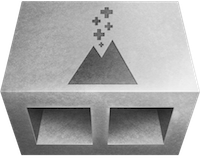
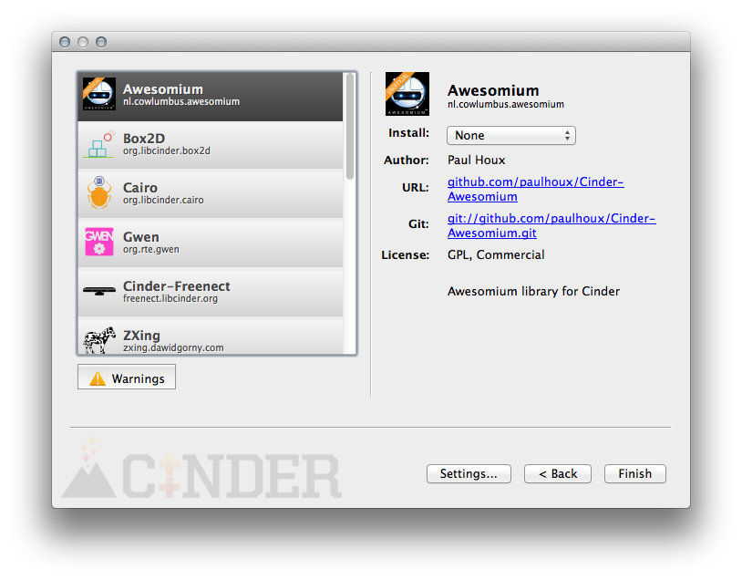

CinderBlocks
A CinderBlock is a prepackaged collection of code and libraries which implement a
feature or exposes a library in Cinder. This includes bridges to libraries like
OpenCV and FMOD, as well as standalone implementations of features like TUIO support.
Cinder ships with several built-in CinderBlocks such as QuickTime and the
LocationManager. A CinderBlock can include source, headers, libraries and any other
resources it depends on.
|

|
TinderBox (Cinder's application-creation tool) is the most straightforward way to use CinderBlocks, though it is not
strictly necessary and an experienced C++ user can add a CinderBlock to a project by
hand. TinderBox parses the
blocks directory of a Cinder installation and
presents the user with a graphical interface like this:

| The information which follows is only relevant to CinderBlock creators and maintainers. |
Specification
Every CinderBlock must have a file named cinderblock.xml in its root.
This file enumerates the files and dependencies of the CinderBlock using XML of the following form:
<cinder>
<block>
...
<block>
</cinder>
The <block> tag supports the following attributes:
"name" (string): The human-readable name of the
block. Ex: "FMOD"
"
id" (string): The unique identifier of the block
expressed in
reverse-dns. Ex: "org.libcinder.fmod"
"git" (string): The URL of the CinderBlock's repository.
Ex: "git://github.com/cinder/Cinder-OpenCV.git"
"author" (string): The author or authors of the
CinderBlock. Ex: "Cinder Project"
"summary" (string): A paragraph-long description of
the block and its purpose. Ex: "The FMOD API is a library for the creation and
playback of interactive audio."
"license" (string): The software license associated
with the library. Ex: "GPL, Commercial"
"version" (string): The version of the
underlying library when applicable. Ex: "4.44.06"
"url" (string): The URL for a CinderBlock-specific
webpage
"library" (string): The URL for the library a
CinderBlock may wrap, Ex: "http://www.fmod.org/"
A <block> tag can contain a number of different elements. For standard files
like headers, source files, assets, etc, the structure is as follows:
<tag>path to the file relative
cinderblock.xml</tag>
Example:
<header>include/example.h</header>
This path is replicated in the output, so a file that lives at include/example.h will be copied to project-path/blocks/blockName/include/example.h.
<source>: A source file, typically a .cpp or .mm file
<header>: A header file, typically a .h file
<resource>: A resource file. Added to Resources.rc on Windows, and
added to the Resources group and build phase in Xcode.
"name" (string): The name of the resource macro, i.e.
RES_MY_LOGO (defined in Resources.h)
"type" (string): The type of the resource - only
applies on MSW. i.e. IMAGE
"id" (int): The integer ID of the resource - only applies on MSW. If
omitted TinderBox automatically creates a unique ID for the type.
<asset>: An asset file, added to the project's assets
directory. Note: Uniquely, assets are copied to the project's assets folder regardless of the install type the user has selected for the CinderBlock.
<framework>: A Mac OS/iOS framework (Mac/iOS-only). May also be used
with a System or SDK-relative dynamic library such as libiconv.dylib
<buildCopy>: A file which is copied to the folder containing the build
product as part of the build process - typically a DLL or dylib.
"destination" (executables | frameworks | plugins ): The Xcode destination type; the default is executables, which corresponds to the Contents/MacOS folder.
These attributes are shared among <source>, <header>, <resource>,
<asset>, <framework>, and <buildCopy> tags
"replaceContents" (boolean): When true, the
string _TBOX_PREFIX_ is replaced with the
project's name throughout the file's contents
"replaceName" (boolean): When true, the
string _TBOX_PREFIX_ is replaced in the output file's
name
"absolute" (boolean): When true, the file
path is considered to be absolute and will not be made relative to the output
"sdk" (boolean): When true, the file path is
considered to be considered relative to the Mac/iOS system SDK (Mac/iOS-only)
"cinder" (boolean): When true, the file path
is considered to be relative to the Cinder installation
"buildExclude" (boolean): When true, the file is included in the
project but is not added to a build step
"virtualPath" (string): Sets a non-default location for the file as
presented in the hierarchy of folders in the IDE
More Block Elements
<includePath>: Adds a directory to the output be searched for #include
statements
"system" (boolean): When true specifies a system
header, i.e. #include <something.h>
rather than #include "something.h"
<frameworkPath>: Adds a directory to the output be searched for
Mac/iOS frameworks (Mac/iOS-only)
<libraryPath>: Adds a directory to the output be searched for
static libraries
<staticLibrary>: Adds a Mac/iOS .a or Windows .lib static library
to the project
<dynamicLibrary>: Adds a Mac/iOS .dylib or Windows .dll dynamic library
to the project
<headerPattern>: Adds as headers all files matching the pattern,
including wildcards (*) <headerPattern>include/*.h</headerPattern>.
<sourcePattern>: Adds as source all files matching the
pattern, including wildcards (*)
<sourcePattern>src/*.cpp</sourcePattern>.
<setting>: Allows modification of an Xcode setting (Mac-only). The
value of the element becomes the value of the setting.
"name" (string): The name of the setting inside of the .pbxproj file
<outputExtension>: Specifies the file extension of the build
product, i.e. ".scr" for Windows screensavers
High-level Block tags
<platform>: Specifies an OS, compiler, build configuration or iOS SDK.
Explained further below.
"os" (msw | macosx | ios): Specifies an operating
system
"compiler" (xcode | vc2012 | vc2013): Specifies a
compiler
"config" (debug | release): Specifies a build configuration
"sdk" (device | simulator): Specifies an iOS SDK (iOS-only)
<supports>: When a non-zero number of <supports> tags, specifies
which operating systems a block supports; one config per tag
"os" (msw | macosx | ios): Specifies the supported operating system.
"compiler" (xcode | vc2012 | vc2013): Specifies the supported
compiler.
<requires>: Specifies a CinderBlock which a project template or
CinderBlock requires, identified by its reverse-dns ID
<Platform> tags
<platform> tags group files which only should be included only when certain
conditions are met. <platform> tags can be nested, and nesting implies
boolean-ANDing of the conditions. For example
<platform os="msw">
<header>include/myLib.h</header>
<platform config="debug">
<staticLibrary>myLib_d.lib</staticLibrary>
</platform>
<platform config="release">
<staticLibrary>myLib.lib</staticLibrary>
</platform>
</platform>
In the example above, both debug and release configurations on MSW would include the
header myLib.h, but the MSW project's debug config would have
myLib_d.lib added, while its release config would have myLib.lib added.
A hypothetical Mac project would receive none of these files.
Creating Template Projects
A CinderBlock may optionally supply one or more project templates, which are meant to
serve as a starting point for using the CinderBlock. For example, the OpenCV
CinderBlock includes a project template which loads an image and performs a basic
image processing operation on it.
One or more project templates may be defined inside the <cinder> tag after the
<block>
<cinder>
<block>
...
<block />
<template>path/to/template.xml<\template>
...
<template>path/to/another/template.xml<\template>
</cinder>
A template.xml file is structured very similarly to a cinderblock.xml
file. Essentially all of the tags are the same. This file is used as the
starting point for a new project, and it in turn will usually (but not necessarily)
be based on one of the core App templates which ship with Cinder, located in the
blocks/__AppTemplates folder. For a CinderBlock's template to be derived from one of
these, the parent's unique ID should be cited in a parent attribute:
<cinder>
<template name="OpenCV: Basic"
parent="org.libcinder.apptemplates.basicopengl">
...
</template>
</cinder>
Best Practices for Maintainers
-
Include an icon: TinderBox will detect and show a
cinderblock.png if present. This should be at least a 72x72 pixel PNG
with an alpha channel.
-
Setup a git repo: In order to allow users to include your library as a git
submodule, it must have its own git repository.
-
Consider minimalism: In many cases a minimal CinderBlock-specific API is
preferable. An example is the Cinder OpenCV block, which serves more as a shim
than as its own interface. Particularly when a library is already
object-oriented, it may be the best design decision. It requires less maintenance
and allows a user who is already familiar with the library to utilize her
knowledge of it, rather than having to learn an "API to an API".
-
Pursue loose coupling: For visually-oriented
CinderBlocks, this may mean separating the render logic out into
other classes or functions, particularly in the sense of not assuming an application is
using OpenGL.
-
Weigh binaries: In many instances a static library is unnecessary, and
simply including a library's source files is adequate. This simplifies
maintenance and allows the library to be used on platforms you may not have
immediate access to. The CinderBlock for Box2D is an example of this technique.
Other libraries, like OpenCV, must be static libraries. A natural decision maker
would be whether the library requires a build system like CMake.
-
Favor static over dynamic libraries: Cinder apps are designed to be self-contained whenever possible.
Mac OS X & iOS
-
Libraries should be universal binaries, supporting the i386 and x86_64
architectures on Mac OS and the armv7 and armv7s architectures on iOS
-
Where necessary, the C++ stdlib should be libc++, and the C++ Dialect must be
C++11.
Windows
Advanced: Custom App Templates
Advanced users may want to create new App template types. An organization may have a style they'd like all applications to conform to, or you may find yourself creating the same sort of application frequently. These templates are located at Cinder/blocks/__AppTemplates. Inside you'll see a directory for each of the default application types, and you can create your own here as well.
Very advanced users may find cause to modify lower level parameters of the Xcode and Visual C++ project files TinderBox creates. If you are familiar with the internals of your compiler's project files, you can modify the files located at Cinder/blocks/__AppTemplates/__Foundation. A key attribute of these files is that the string _TBOX_CINDER_PATH_ will be replaced with the absolute file path to Cinder, and the string _TBOX_PREFIX_ will be replaced with the user-provided project name.